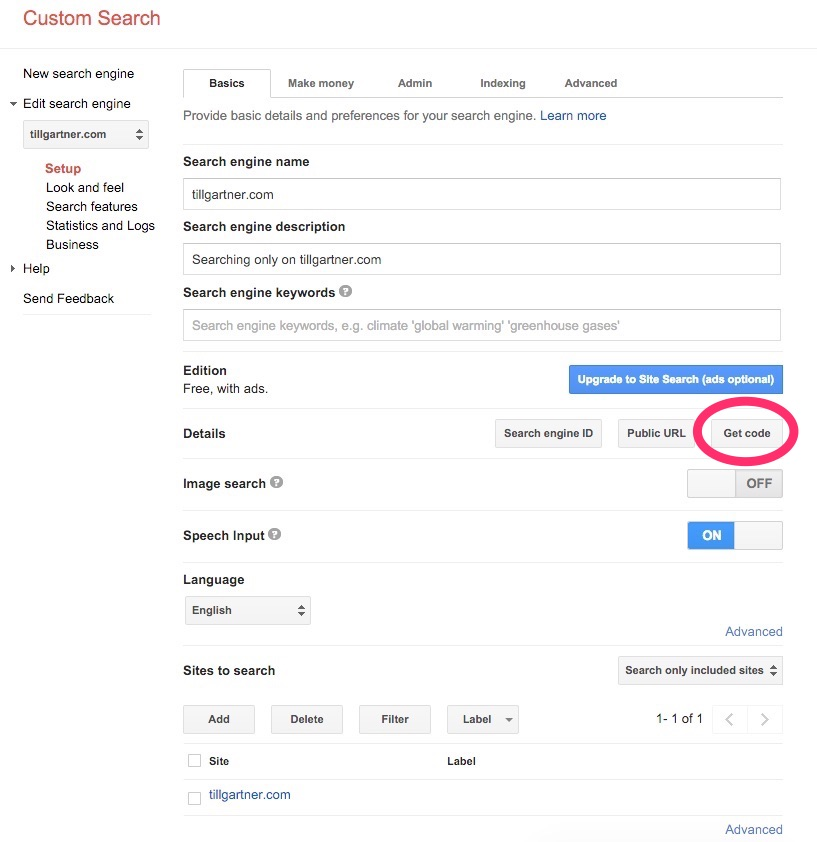
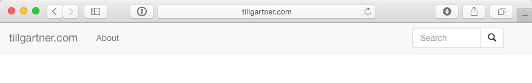

Adding Search to a static site
December 19, 2015So now I have a static site that is generated by jBake. So far so good. But what’s a site without a search? Search is a must. So how do we add search functionality to a static site? Easy: We use the search giants Custom Search functionality ;)
These are the steps I took to get there:
Create the Custom Search Engine
Nothing easiere: Just go to the Google CSE page and create it. The process is self explanatory: You need a name for your search engine, you tell it what content should be made available. In my case this would be all from tillgartner.com and that’s basically it. We will return at the end to this site in order to fine tune the look & feel of the results.

The one thing we need from here is the code in order to embed the search. You get this code by clicking the bitton “Get Code“.
Add the search field
Next we need a search box on our pages. I want a search box on the top right of every page on the entire website. So I add it to the freemarker template that creates the menu.
In my case the menu.ftl looks something like this:
<!-- Fixed navbar -->
<nav class="navbar navbar-default navbar-fixed-top" role="navigation">
<div class="container-fluid">
<div class="navbar-header">
<button type="button" class="navbar-toggle" data-toggle="collapse" data-target=".navbar-collapse">
<span class="sr-only">Toggle navigation</span>
<span class="icon-bar"></span>
<span class="icon-bar"></span>
<span class="icon-bar"></span>
</button>
<a class="navbar-brand" href="/">tillgartner.com</a>
</div>
<div class="navbar-collapse collapse">
<ul class="nav navbar-nav">
<li><a href="/recipe/recipe.html">Recipes</a></li>
<li><a href="/about.html">About</a></li>
</ul>
<div class="col-sm-3 col-md-3 pull-right">
<form class="navbar-form" role="search" action="/search.html">
<div class="input-group">
<input type="text" class="form-control" placeholder="Search" name="q">
<div class="input-group-btn">
<button class="btn btn-default" type="submit">
<i class="glyphicon glyphicon-search"></i>
</button>
</div>
</div>
</form>
</div>
</div><!--/.nav-collapse -->
</div>
</nav>
<div class="container">
Note: I fixed the code on my site and on the code above on 29.12.2015. The code for the button that appears when the width of the screen makes the menu collapse, was missing. Just in case you read this earlier and wonder why it’s different now…
I found thatthe part of the menu and how it collapses wasn’t trivial. The best explanation I found was this video.
It’s standard Bootstrap menu jiggling. What’s special in our case is the action attribute in the form that links to the search result page (called search.html in my case).
The result is a neat little serach box on the top right corner:

Search result page
Last but not least we need the search result page. This page will be called (i.e. linked to) from the search form we just made. It’s URL will be something like
http://tillgartner.com/search.html?q=huhu
In my case the search result page will hold only the search result. In case the user wants to modify his search, he still has the ubiquitous search box on the top right corner. The search result page will hold the code we copied when configuring the Custom Serach Engine. In my case the entire Markdown file looks like this:
title=Search
type=page
date=2015-12-17
status=published
~~~~~~
<script>
(function() {
var cx = 'XXX_Your_code:goes_here_XXX';
var gcse = document.createElement('script');
gcse.type = 'text/javascript';
gcse.async = true;
gcse.src = (document.location.protocol == 'https:' ? 'https:' : 'http:') +
'//www.google.com/cse/cse.js?cx=' + cx;
var s = document.getElementsByTagName('script')[0];
s.parentNode.insertBefore(gcse, s);
})();
</script>
<div markdown = "0"><gcse:searchresults-only>Search results...</gcse:searchresults-only></div>
It took me a while to figure out how to tell markdown that this is pure HTML and that it should take it as such without transforming or quoting it. The solution was the <div markdown="0"> tag.
Resources
Some reading that helped me to find wy way:
- Create your own search engine
- How to Integrate a Google Custom Search Popup In a Bootstrap Navbar
- Implementing search box, by Google